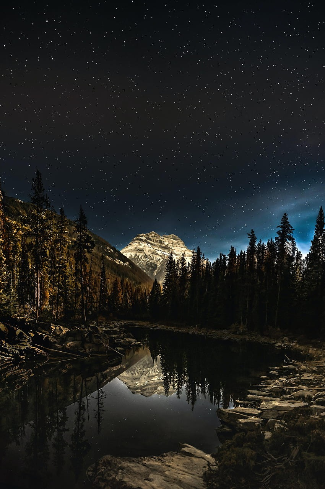

Decidís ignorar al cuervo y seguir caminando. A medida que avanzáis, el sendero se vuelve más luminoso y llegáis a un hermoso lago rodeado de flores brillantes. En el centro del lago, veis una isla pequeña con un árbol dorado. Remáis hasta la isla usando un bote que encontráis cerca y descubris que el árbol concede deseos. Pedís un deseo juntos y regresáis a casa, felices y agradecidos por la experiencia mágica.
El Misterio del Bosque Encantado
